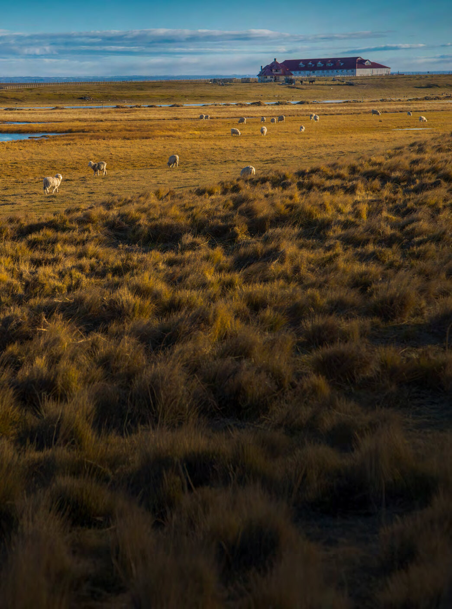

Crecimiento económico · variación anual del PIB (%)
Desafíos urgentes en tiempos de incertidumbre
Unidad de Estudios Regionales — Universidad de Magallanes
5 de junio, 2025
ESI 2017–2023 · ingreso de la ocupación principal · Magallanes
23%
menos ganan, en promedio, las mujeres ocupadas de Magallanes que los hombres en su ocupación principal (2023).
Fuente: elaboración propia sobre la base de la ESI 2017–2023

Unidad de Estudios Regionales
ÍN
DI
CE
Plan de la presentación
01 Descripción del estudio 4
02 Aspectos económicos del desarrollo 5
03 Perfiles comunales 10
04 El fenómeno de la conmutación laboral 16
05 Calidad del empleo y brechas de género 19
06 Aspectos subjetivos del desarrollo regional 23
Fotografía Boletín de Estudios Regionales N°2
01
Estudio de brechas sociolaborales y de cuidados
Perspectiva
Identificar desafíos presentes y futuros.
Diagnosticar las problemáticas de género, cuidados, calidad del empleo y condiciones para el desarrollo futuro de Magallanes y sus territorios.
Metodología
Enfoque mixto: métodos cuantitativos y cualitativos.
Fuentes
ENE y ESI · registros del SII y del Ministerio de Desarrollo Social · CASEN 2009, 2015 y 2022.
De manera inédita, la Encuesta Barómetro Regional, trabajo colaborativo entre universidades públicas regionales.
02
Aspectos económicos del desarrollo
Crecimiento, estructura productiva y ocupación
Fotografía Andrea Barría · Boletín N°2
02
Aspectos económicos del desarrollo
Fuente: Banco Central de Chile
Fuente: Banco Central de Chile · Δ pp: diferencia en puntos porcentuales
Fuente: elaboración propia sobre la base de la ENE 2023
Fuente: elaboración propia sobre la base de la ENE 2023
03
Perfiles comunales
Punta Arenas, Natales, Porvenir y Cabo de Hornos
Fotografía Rafael Cheuquelaf · Boletín N°2
Cuatro comunas, cuatro perfiles
Clic en un punto para ver la categoría ocupacional de cada comuna. Arrastra y haz zoom con la rueda del mouse.
53°10′S · 70°55′W · comuna 01/04
40% Cerca de 4 de cada 10 ocupados en servicios administrativos y de apoyo
54% Asalariados del sector privado
18% Asalariados del sector público
19% Trabajadores por cuenta propia
Le siguen la construcción y el alojamiento y servicio de comidas, rama ligada al turismo; el resto de las ramas reúne menos del 10 % cada una. Por grupo ocupacional, cerca del 20 % trabaja en servicios, 16 % son profesionales y 15 % artesanos y operarios de oficios.
51°43′S · 72°30′W · comuna 02/04
37% De los ocupados en servicios administrativos y de apoyo
55% Asalariados del sector privado
19% Asalariados del sector público
23% Trabajadores por cuenta propia
Luego vienen el alojamiento y servicio de comidas y la construcción. Por grupo ocupacional destacan los trabajadores de servicios (22 %), artesanos y operarios de oficios (17 %), ocupaciones elementales (15 %) y profesionales y científicos (15 %).
53°18′S · 70°22′W · comuna 03/04
60% De los ocupados en servicios administrativos y de apoyo
62% Asalariados del sector privado
16% Asalariados del sector público
14% Trabajadores por cuenta propia
Le siguen las actividades profesionales, científicas y técnicas (19 %) y los sectores ligados a la agricultura (20 %). Por grupo ocupacional, las ocupaciones elementales son las más relevantes (17 %), seguidas por artesanos, operadores de máquinas y agricultores (15 % cada uno) y trabajadores de servicios (13 %).
54°56′S · 67°37′W · comuna 04/04
33% Profesionales, científicos e intelectuales
60% Asalariados del sector público
23% Asalariados del sector privado
10% Trabajadores por cuenta propia
La única comuna donde predomina el empleo público. Tras los profesionales siguen los trabajadores de servicios y vendedores de comercio y los técnicos profesionales de nivel medio, con cerca de 17 % cada uno.
04
Conmutación laboral
Tasa por región y áreas con mayor conmutación
Fotografía Rafael Cheuquelaf · Boletín N°2
04
Conmutación laboral
Fuente: elaboración propia sobre la base de la ENE 2023
Fuente: elaboración propia sobre la base de la ENE 2023 y Banco Central de Chile · en porcentaje
05
Calidad del empleo y brechas de género
Protección social e ingresos según sexo
Fotografía Andrea Barría · Boletín N°2
05
Calidad del empleo y brechas de género
Fuente: elaboración propia sobre la base de la ENE
ESI 2023 · ocupación principal · pesos corrientes
925mil $ Ingreso promedio de los ocupados, 2023
1.034mil $ Hombres
792mil $ Mujeres
23% Brecha de ingresos entre hombres y mujeres
La brecha llegó a 26 % entre 2018 y 2020, bajó a 19 % en 2021 y volvió a ampliarse hasta 23 % en 2023.
Fuente: elaboración propia sobre la base de la ESI 2023 · ingresos en pesos corrientes
Fuente: elaboración propia sobre la base de la ESI 2017–2023
06
Aspectos subjetivos del desarrollo
Identidad, confianza y expectativas de futuro
Fotografía Rafael Cheuquelaf · Boletín N°2
06
Aspectos subjetivos del desarrollo
Fuente: Encuesta Barómetro Regional
Fuente: Encuesta Barómetro Regional · Chile: Informe de Desarrollo Humano, PNUD 2024
Fuente: Encuesta Barómetro Regional
Fuente: Encuesta Barómetro Regional
Fuente: Encuesta Barómetro Regional · Δ pp: Magallanes menos resto de la región
Fuente: Encuesta Barómetro Regional · elaboración propia
Desafíos urgentes en tiempos de incertidumbre.
Muchas gracias
Contacto
Marcelo Miño Ortiz
marcelo.mino@umag.cl
Unidad
Unidad de Estudios Regionales
Universidad de Magallanes
Evento
II Jornadas de Estudios del Trabajo
Punta Arenas, 5 de junio de 2025
Contraportada · Boletín de Estudios Regionales N°2
II Jornadas de Estudios del Trabajo / UER-UMAG